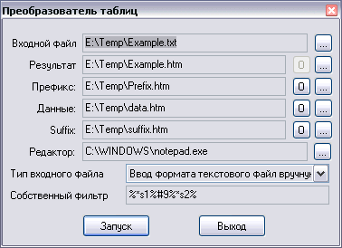

Назад
~Txt2Htm
Описание:
Программа предназначена для преобразования формата таблиц. Я использовал ее для преобразования текстовых таблиц
в таблицы гипертекста. Проблема возникла оттого, что Excel (осуществляющий данное преобразование) производит
его крайне неэффективно, а мне был нужен эффективный код. Кроме того, с помощью данной программы можно решить
проблему автоматической простановки ссылок (см. примерные файлы данных). Однако этим применения программы не
заканчиваются, благодаря своей простоте она может конвертировать некоторые другие форматы.
Работа с программой:

Для преобразования необходимо написать скрипт преобразования. Это - текстовая строка, указывающая программе,
как трактовать формат входного файла. Формат строки-скрипта:
id1id2id3...
то есть сплошной (без пробелов и других разделителей) список идентификаторов и разделителей. Каждый
элемент этого списка имеет следующий формат:
%модификатор и идентификатор без разделения%список разделителей через запятую
Модификатор - это последовательность символов:
- число - ширина поля. Если задана, то программа всегда будет читать из файла строку заданной длины.
- * - означает, что столбцы может разделять более одного разделителя. Лишние разделители игнорируются.
- ! - означает, что данное поле не может быть пустым.
- ^ - означает, что все символы поля будут преобразованы к верхнему регистру.
- _ - означает, что все символы поля будут преобразованы к нижнему регистру. Если возникает конфликт с предыдущим модификатором - действует последний.
- & - означает, что лишние пробелы в начале и конце поля будут удалены
Идентификатор начинается первым символом английского алфавита. В имени идентификатора могут встречаться только
латинские буквы и цифры (символ '_' не разрешен!). Остальные символы игнорируются. Регистр значения не имеет.
Имя идентификатора внутри шаблона (см. далее), заключенное в сиволы % заменяется на его значение.
Разделители - символы, ограничивающие поле. Например, в текстовых таблицах, как правило, ограничителями
являются символы псевдографики, или пробелы. Символы можно задавать в виде их кода (например, #9 - код
табуляции, #13 - код новой строки), в виде сплошной строки ('сплошная строка'), либо в прямом виде.
В прямой записи спецсимволы (запятая (,), бэкслеш (\), кавычка ('), решетка (#)) должны экранироваться символом
бэкслеша (\). В сплошной строке такого делать не нужно. Следует выбирать наиболее оптимальный вид и придерживаться
его в дальнейшем. Если после какого-то идентификатора нет разделителей, но он не имеет фиксированную длину, то
считается, что его разделители совпадают с разделителями предыдущего. Поскольку большинство таблиц однородно,
это свойство сильно упрощает запись скрипта.
Примеры:
%*&s1%#9,' '%12s2%%s3%\%,'\&'%*s4%#13#10
Следуя данному скрипту, программа поймет, что после первого поля может стоять любое число разделителей пробелов
и табуляций, причем лишние пробелы нужно удалить, второе поле имеет фиксированную ширину 12 байт (поэтому нет
разделителей), третье поле заканчивается либо символом %, либо сочетанием \&, наконец, четвертое поле заканчивается
одним или несколькими символами переноса строки в формате Windows (для Unix формат будет другим). Например, для
последовательности
Раз[табуляция][пробел][табуляция]Два123456789Три\&Четыре[перенос строки][перенос строки]
значения идентификаторов будут:
S1=Раз;S2=Два123456789;S3=Три;S4=Четыре
Для таблицы с четырьмя столбцами и любыми разделителями оптимальный скрипт:
%*&s1%[разделитель, или список]%*&s2%%*&s3% и т. д.
Если встречаются идентификаторы с одинаковыми именами, то последующие игнорируются.
Для работы нужно создать три шаблона: шаблон заголовка, базовый (данных) и суффикса (завершающий). Все три
шаблона создаются в том формате, в каком должен быть выходной файл. Последовательность %имя идентификатора%
будет заменена на значение идентификатора. Например, для предыдущего примера %s3% будет заменено на Три.
Шаблон заголовка обрабатывается только один раз - он включается в начало файла, шаблон суффикса включается в конец,
а шаблон данных включается последовательно для каждой записи (или строки) из входного файл. Максимальный размер
поля - 2 килобайта. Кроме пользовательских идентификаторов, в программе есть шесть стандартных идентификаторов:
- INNAME - полное имя входного файла
- OUTNAME - имя генерируемого файла
- PREFIX, DATA, SUFFIX - имена файлов шаблонов заголовка, данных, суффикса
- AUTHOR - мое имя
Пример шаблона заголовка
<HTML>
<HEAD><TITLE>Список %outname%</TITLE></HEAD>
<BODY>
<CENTER>
<H1>Описание %inname%</H1>
<H2>Этот файл %outname%</H2>
<br>
<TABLE BORDER=1>
<strong>
<TR>
<TH WIDTH="20%">Файл</TH>
<TH WIDTH="70%">Описание</TH>
<TH WIDTH="10%">Открыть</TH>
</TR>
</strong>
Пример шаблона данных
<TR>
<TH WIDTH="20%"><font size="3" face="Arial">%S1%</font></TH>
<TH WIDTH="70%"><font size="2" face="Arial">%S2%</font></TH>
<TH WIDTH="10%"><font size="3" face="Arial"><a href="%S1%">Открыть</a></font></TH>
</TR>
Пример шаблона суффикса
</TABLE>
<br>
<hr width="75%">
<br>
<table border=1>
<tr><th width=400 colspan=2><font size="-1">Сделано используя:</font></th></tr>
<tr><th width=100><font size="-2">Файл префикса:</font></th><th width=300><font size="-2">%prefix%</font></th></tr>
<tr><th width=100><font size="-2">Файл данных:</font></th><th width=300><font size="-2">%data%</font></th></tr>
<tr><th width=100><font size="-2">Файл суффикса:</font></th><th width=300><font size="-2">%suffix%</font></th></tr>
<tr><th width=400 colspan=2><font size="-1">Авторские права: %Author%</font></th></tr>
</table>
</CENTER>
<body>
</html>
Скрипт преобразования:
%*s1%#9%*s2%
Входной файл:
| Первый | Красный |
| Второй | Зеленый |
| Третий | Синий |
| Четвертый | Коричневый |
Открыть example.txt
Результат:
Открыть example.htm
Особенности:
- В программе есть четыре предустановленных типа скриптов: для стандартных таблиц (разделители табуляции)
на три и четыре столбца, оптимизатор для текстовых файлов (автоматически приписывает в конец нужный символ конца
строки, так что после последнего идентификатора Вам писать ничего не нужно, и скрипты для бинарных файлов - писать
так, как написано в руководстве.